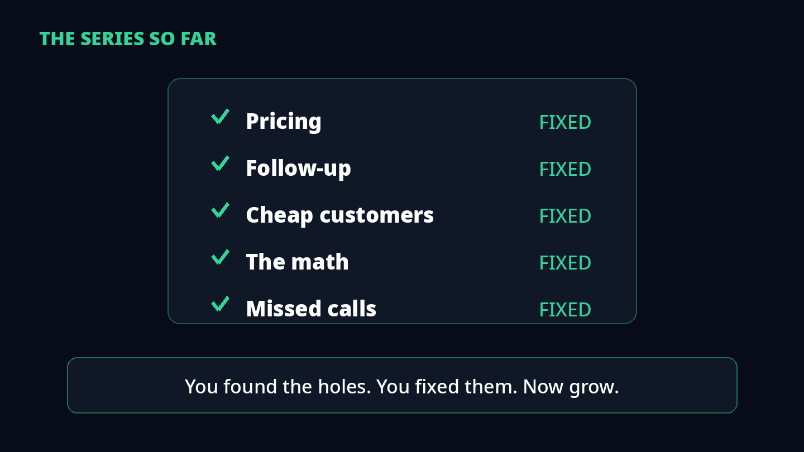
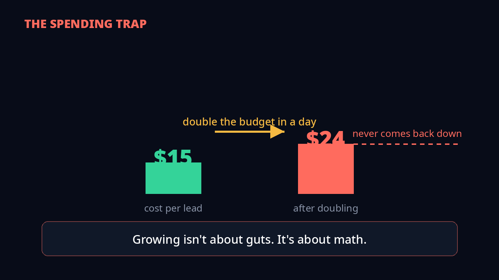
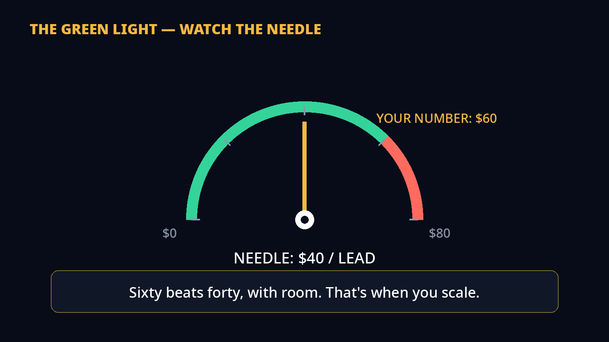
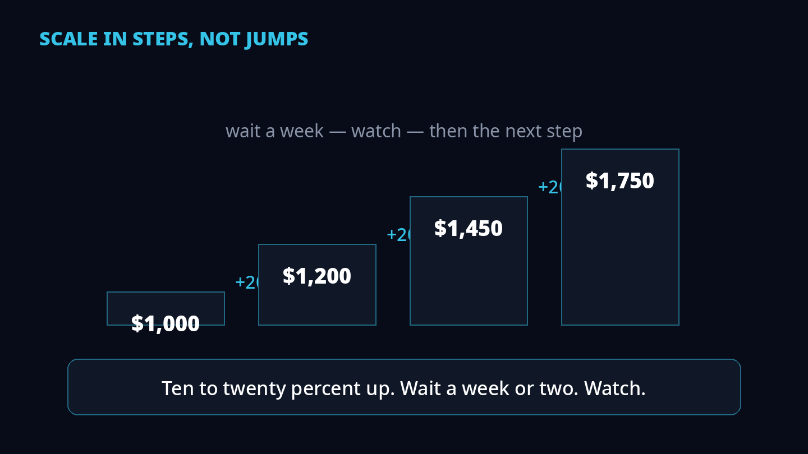
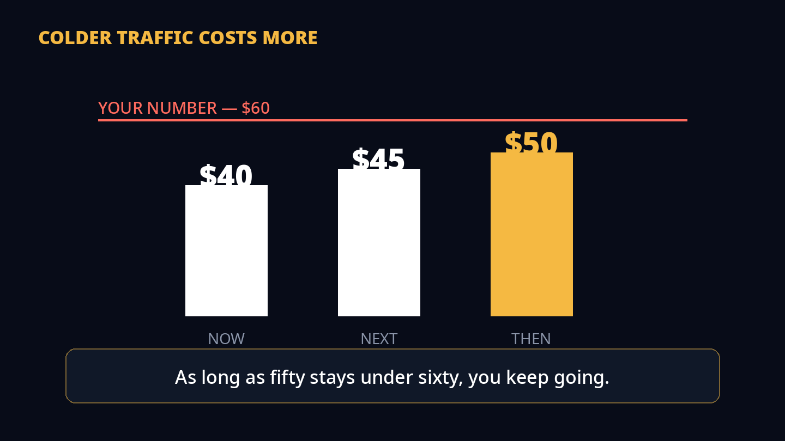
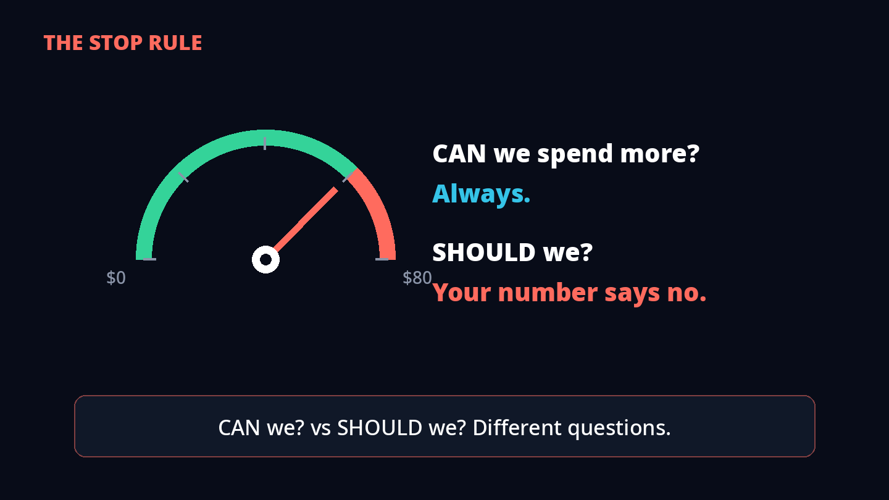
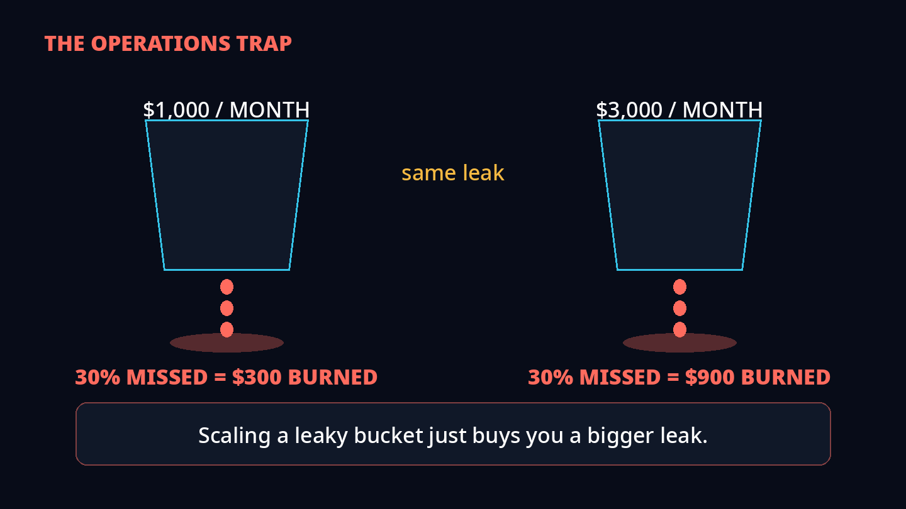
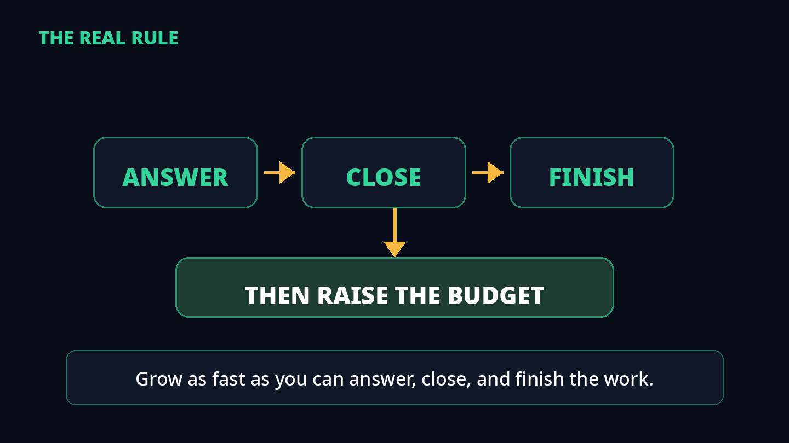
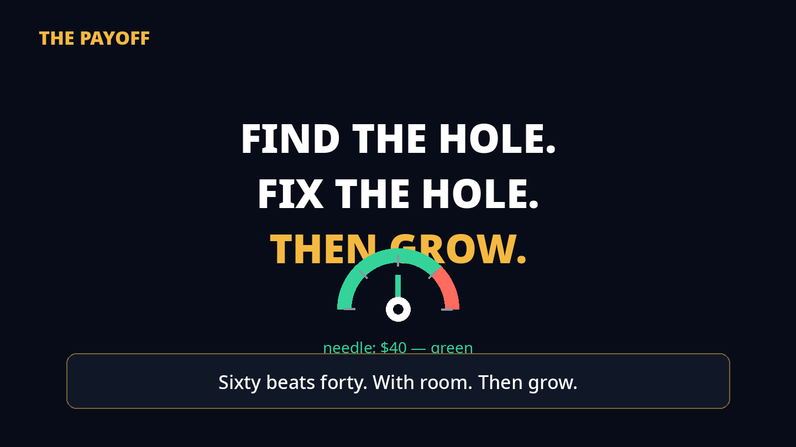

Your number beats the cost. Now what? Every video in this series found a hole — pricing, follow-up, cheap customers, the math, missed calls. You found them. You fixed them. Now... grow.
1The series so far

This video only works because of the ones before it. Pricing — fixed. Follow-up — fixed. Cheap customers — fixed. The math — fixed. Missed calls — fixed.
Scaling is the last step, not the first. If any hole is still open, more ad spend just pours more money through it.
2The spending trap

Most people think scaling means one thing — spend more. So they double the budget in a day. Here's what happens: your cost per lead jumps. $15 becomes $24.
You turn the budget back down. It doesn't recover. Growing isn't about guts. It's about math.
3The green light

So when do you scale? Here's the green light. Your number — what one lead is worth to you — is $60. Right now each lead costs you $40.
Sixty beats forty. With room to spare. That's when you scale. Not before.
4How fast

You've heard the twenty-percent rule. Here's the part most people miss: Google never published it. Google's own help page names three things that restart learning — a new strategy, a setting change, a composition change. Budget size isn't one of them.
The twenty-percent rule comes from people who run ads every day. Ten to twenty percent up, wait a week or two, watch what happens. They learned it the hard way — watching big jumps break good campaigns.
5Why slow wins

The first customers are always the cheapest. Best keywords. Closest zip codes. People most ready to buy. Every step up, you pay more for people who want it less.
Your forty-dollar lead becomes forty-five. Then fifty. That's just how it works. As long as fifty stays under sixty, you keep going.
6The stop rule

When do you stop? The day your cost per lead hits sixty — your number — you stop. Not pause. Not panic. Stop.
An agency called InnerSpark Creative asks two questions: CAN we spend more? And SHOULD we spend more? Different questions. Your number answers the second one.
7The operations trap

More calls don't break your ads first. They break your BUSINESS first. Remember the missed-call video? Thirty percent missed on a thousand a month — $300 burned.
On three thousand? $900. Scaling a leaky bucket just buys you a bigger leak.
8The real rule

Grow as fast as you can answer, close, and finish the work. Not faster. The founder of Play Media runs ads for a living. His rule is simple: if your funnel leaks, more budget just means more waste.
Fix the phone. Fix the follow-up. THEN raise the budget.
9Then grow

You found the holes. You fixed the holes. Sixty beats forty. With room. So now... then grow.
Your scaling checklist: (1) Your number beats your cost per lead, with room. (2) Raise 10–20% at a time, wait a week or two, watch. (3) The day cost per lead touches your number, stop. (4) Scale only as fast as you can answer, close, and finish the work.
Find the hole.Fix the hole.Then grow.
Sources
Every claim in this video comes from a named source:
- Google Ads Help — bid strategy statuses — the three learning triggers: new strategy, setting change, composition change. Budget size is not one of them.
- Google Ads Help — calibration — learning can take up to around 50 conversion events or 3 conversion cycles.
- Search Engine Land, 2026 — PPC budgeting — the 10–20% weekly increase guidance.
- Search Engine Journal — SCALE framework — max 20–30% every couple of days; stop if cost-per-customer jumps over 20%.
- AvidDemand, Oct 2026 — 15–20% at a time, with a week or two between increases.
- InnerSpark Creative — readiness framework — scale when lead quality, economics, capacity, and demand all hold; "Can we spend more?" vs "Should we spend more?"
- InnerSpark Creative — diminishing returns — high-intent local demand is finite; extra spend buys colder traffic.
- Play Media founder (LinkedIn, 2026) — "Scaling isn't a budget problem. It's a systems problem. If your funnel leaks, more budget = more waste."
- ExcellapPC, Sept 2026 — 9x spend → 5x revenue, ROAS 13 → 7.9 — still profitable, decided in advance.
- Syed Simanta (LinkedIn) — plumbing: $433/lead rebuilt to $25–75 at 60+ qualified leads/month.
- r/PPC — community report — advertiser doubled budget, CPA $15 → $24, cut back, performance never returned to baseline.
Part of the series
Then Grow is the payoff video — every video before it found one hole:
The 4 Profit Levers — fix your pricing.
The Follow-Up Machine — close more of the calls you get.
The $2 Customer — stop chasing cheap customers.
Don't Run Google Ads Until You Do This Math — what one lead is worth to you.
The Missed-Call Tax — the worth you throw away on unanswered calls.
This video — now that the holes are fixed, grow.
A note on the numbers
This is a practitioner framework, not a research paper. The video's own math ($60 number, $40 cost per lead, $1,000 → $3,000/month) is a worked "let's say" example — plug in your own numbers. The cited research above is from its named sources.